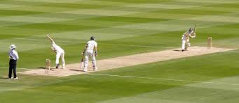
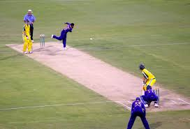

Cricket is a bat-and-ball game played between two teams of eleven players on a field at the center of which is a 22-yard pitch with a wicket at each end.
The batting team scores runs by striking the ball bowled at the wicket with their bat, while the bowling and fielding team tries to prevent this and dismiss each batter (so they are "out"). Means of dismissal include being bowled, when the ball hits the stumps and dislodges the bails, or by the fielding side catching the ball after it is hit by the bat, but before it hits the ground.


The field is usually circular or oval with a rectangular 22-yard pitch in the exact center. Different fielding positions have unique names like "Slip", "Gully", "Point", and "Cover" depending on their angle and distance from the batsman.
The longest recorded cricket match took place in 1939 between England and South Africa. It lasted for 14 days and eventually ended in a draw because the English team had to catch their boat home!